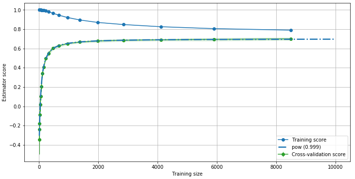

Welcome to learning-curves’s documentation!¶
Learning-curves is Python module that extends sklearn’s learning curve feature. It will help you visualizing the learning curve of your models.
Learning curves give an opportunity to diagnose bias and variance in supervised learning models, but also to visualize how training set size influence the performance of the models (more informations here).
Such plots help you answer the following questions:
Do I have enough data?
Can I train my model with less data without reducing accuracy?
Is my training/validation set biased?
What is the best model for my data?
What is the perfect training size for tuning parameters?
Learning-curves will also help you fitting the learning curve to extrapolate and find the saturation value of the curve.
Installation¶
$ pip install git+https://github.com/H4dr1en/learning-curves#egg=learning-curves
To create learning curve plots, first import the module with
import learning_curves as LC.
Getting started¶
To get started, you can start with the following code:
import learning_curves as LC
from sklearn.datasets import make_regression
from sklearn.linear_model import SGDRegressor
X, Y = make_regression(n_samples=int(1e4), n_features=50, n_informative=25, bias=-92, noise=100)
lc = LC.LearningCurve()
lc.get_lc(SGDRegressor(), X, Y)
Output:
On this example the green curve suggests that adding more data to the training set is likely to improve a bit the model accuracy. The green curve also shows a saturation near 0.96. We can easily fit a function to this curve:
lc.plot(predictor="best")
Output:

Here we used a predefined function, pow, to fit the green curve. The
R2 score is very close to 1, meaning that the fit is optimal. We can
therefore use this curve to extrapolate the evolution of the accuracy
with the training set size.
This also tells us how many data we should use to train our model to maximize performances and accuracy.
Custom Predictors¶
You can create a Predictor like this:
predictor = Predictor("myPredictor", lambda x,a,b : a*x + b, [1,0])
Here we created a Predictor called “myPredictor” with the function
y(x) = a*x + b. Because internally SciPy optimize.curve_fit is
called, a first guess of the parameters a and b are required.
Here we gave them respective value 1 and 0. You can then add the
Predictor to the LearningCurve object in two different ways:
Pass the
Predictorto theLearningCurveconstructor:
lc = LearningCurve([predictor])
Register the
Predictorinside the predictors of theLearningCurveobject:
lc.predictors.append(predictor)
By default, 5 Predictors are instantiated:
self.predictors = [
Predictor("pow", lambda x, a, b, c, d : a - (b*x+d)**c, [1, 1.7, -.5, 1e-3]),
Predictor("pow_log", lambda x, a, b, c, m, n : a - b*x**c + m*np.log(x**n), [1, 1.7, -.5, 1e-3, 1e-3], diverging=True),
Predictor("pow_log_2", lambda x, a, b, c : a / (1 + (x/np.exp(b))**c), [1, 1.7, -.5]),
Predictor("inv_log", lambda x, a, b : a - b/np.log(x), [1, 1.6]),
Predictor("exp", lambda x, a, b, c : np.exp((a-1)+b/x +c*np.log(x)),[.9, -1e3, 1e-3], diverging=True)
]
Some predictors perform better (R2 score is closer to 1) than others, depending on the dataset, the model and the value to be preditected.
Find the best Predictor¶
To find the Predictor that will fit best your learning curve, we can
call get_predictor function:
lc.get_predictor("best")
Output:
(pow [params:[ 0.9588563 11.74747659 -0.36232639 -236.46115903]][score:0.9997458683912492])
Plot the Predictors¶
You can plot any Predictors fitted function with the plot
function:
lc.plot(predictor="all")
Output:
Save and load LearningCurve instances¶
Because Predictor contains lambda functions, you can not simply save
a LearningCurve instance. One possibility is to only save the data
points of the curve inside lc.recorder["data"] and retrieve then
later on. But then the custom predictors are not saved. Therefore it is
recommended to use the save and load methods:
lc.save("path/to/save.pkl")
lc = LC.LearningCurve.load("path/to/save.pkl")
This internally uses the dill library to save the LearningCurve
instance with all the Predictors.
Find the best training set size¶
learning-curves will help you finding the best training set size by
extrapolation of the best fitted curve:
lc.plot(predictor="all", saturation="best")
Output:
The horizontal red line shows the saturation of the curve. The
intersection of the two blue lines shows the best accuracy we can get,
given a certain threshold (see below).
To retrieve the value of the best training set size:
lc.threshold(predictor="best", saturation="best")
Output:
(0.9589, 31668, 0.9493)
This tells us that the saturation value (the maximum accuracy we can get
from this model without changing any other parameter) is 0.9589.
This value corresponds to an infinite number of samples in our training
set! But with a threshold of 0.99 (this parameter can be changed
with threshold=x), we can have an accuracy 0.9493 if our
training set contains 31668 samples.
Note: The saturation value is always the second parameter of the
function. Therefore, if you create your own Predictor, place the
saturation factor in second position (called a in the predefined
Predictors). If the function of your custom Predictor is
diverging, then no saturation value can be retrieven. In that case, pass
diverging=True to the constructor of the Predictor. The
saturation value will then be calculated considering the max_scaling
parameter of the threshold_cust function (see documentation for
details). You should set this parameter to the maximum number of sample
you can add to your training set.